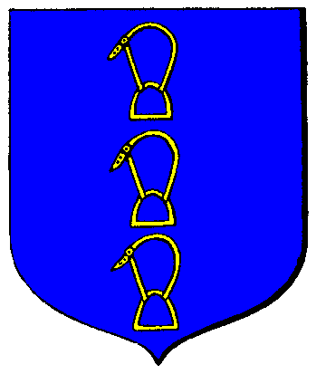

|

|
Das schwarze Brett
|
|
| Übersicht,
Anschläge und Stammtisch (RPG) |
|
Die Wespen stechen
|
Friedrichll.
  |
*ach ist das doch immer wieder lustig*
aber was ich schade finde, dass so ein schlechter kaempfer lieber pluenderer stuemperhaft jagt, weil er selbst zu feige ist, als pluenderer dazustehen *g*
naja, rincewind waer halt ein miserabler pluenderer und versuchts so unter dem deckmantel des legalen
ach ja, wo euer 3 gebaeude stehen, weiss ich schon.... wie ist die scherbe doch so klein....
Friedrichll.
Zur 2. Stunde am 89.Dunkelfrost im Jahre 415 |
12.05.04 19:17
 |
|
| rincewind (RIP) |
also wenn ich bei meinen maßnahmen wertvolle dinge in die hand bekam, die der rede wert sind, hab ichs auch schon in abzug von der schuld gebracht.
schließlich ist mein ziel, dem delinquenten bezahlung möglich zu machen, und nicht Ihn ewig zu jagen.
aber wegen kleinkram mach ich da nicht rum.
die 750 waren, die enno oben erwähnt, waren ausschliesslich holz und getreide.
ein anderes mal fand ich 23 bier.
und das wars auch schon.
das mit dem "weit mehr als 50000gs" ist erlogenes gewäsch.
wenn er nach der maßnahme schreiben würd.. "mir fehlen jetzt 750 holz und getreide, können wir das zu nem marktpreis a 3 auf die schuld anrechnen?" oder so,
dann würd ich das ja noch tun.
weil das bedeuten würd, daß er sich tatsächlich über die abzahlung der schuld gedanken macht.
aber das tut er ja nicht, statt dessen weint er hier im forum rum.
aber klar, jedem seine meinung darüber wie plündererjagd ablaufen sollte.
wers auf bessere und humanere weise kann, solls tun.
ich lass mich da gern belehren, wenn mir jemand zeigt, auf welche weise er da plünderer "sanfter" kleinkriegt.
ich finde, allein das suchen quer durch die scherben, folgen vager hinweise, etc. ist n ziemliches stück arbeit.
wenn mir da jetzt auch noch leute vorschreiben wollen, wie ich die abrechnung im detail machen soll.
wer hat denn die opfer gefragt, auf welche weise sie gerne geplündert werden wollen.. "darf ich das auch noch mitnehmen? oder solls a bisserl weniger sein? solln wir das mit der nächsten plünderung verrechnen.. aber ja doch, werte kundin"
rincewind
Zur 3. Stunde am 89.Dunkelfrost im Jahre 415 |
12.05.04 19:26
|
|
| Mia von Tacheless (RIP) |
nun... wenn ihr die waren dann jetzt ploetzlich doch verrechnet, will ich nichts gesagt haben ...
eure eigene aussage kurz vorher klang nur noch ganz anders...
"werte Mia,
ganz offen.. nein, diese "maßnahmen zur zahlungserinnerung" verrechne ich NICHT mit der abschuldungssumme."
Baronesse Mia von Tacheless,
Vorsteherin von Burg Tacheless,
Ministerialrätin für Seefahrt und Stadt,
Verlobte des ehrenwerten Leandran
Zur 6. Stunde am 89.Dunkelfrost im Jahre 415 |
12.05.04 20:06
|
|
| rincewind (RIP) |
ich sag ja, ich habs auch schon in abzug gebracht, weils mal viel war
aber generell muß ich zugeben, tu ichs bisher eher NICHT. ehrliche antwort.
ich bin auch nur n mensch.. sorry, halbling, .. und kein bankinstitut.
bei mir gibts keine total festen regeln und prinzipien.
und das hängt auch irgendwo von dem plünderer ab, wie der drauf ist.
ist der sturer, oder duzt mich, oder beleidigt mich gar, dann bin ich auch sturer.
einmal hatt ich ne diebin, die hat gemeint sie muss mich beleidigen.
ich hab (das war ganz in der anfangszeit hier, da war geld echt noch was wert) für zwei beleidigungswörter einfach je n sühnegeld von 100 GS draufgeschlagen.
und sie hats später auch anstandslos mitgezahlt.
ja, ich geb zu, was ich mach ist irgendwo willkür.
aber weiß jemand was besseres.
die meisten hier "bestrafen" plünderer hier mit ner nutzlosen KE, zwei wochen jammern, und dann vergessen sies dem wieder.
für mich ist plündern ne willkommene einladung, dem dann systematisch ne strafe aus dem leib zu prügeln.
je länger das prügeln, desto höher die strafe.
denn das deckt eben dann meinen zeitaufwand und die kosten.
ist das so kompliziert?
wer was besseres weiß, solls praktizieren.
aber mir net das system zerreden, und selber gegen plünderer auch nix als worte in der hand haben.
rincewind
Zur 11. Stunde am 89.Dunkelfrost im Jahre 415 |
12.05.04 21:21
|
|
Friedrichll.
|
ich kugel mich vor lachen rincewind. dann sag ich mal du altes ehlendigliches erbaermliches miststueck einer alten kuh. hast wohl kein weib zuhaus, das es dir richtig besorgen koennte *G*
was kostet das jetzt???
*ggg*
nur so zur info, falls ich mal in den genuss eines schriftwechsels mit dir kommen sollte.... wobei schriftwechsel wird das ja eh net, weil ich schwachkoepfen net antworte... :-P
Friedrichll.
Zur 23. Stunde am 89.Dunkelfrost im Jahre 415 |
13.05.04 0:14
|
|
| Ogrim Doomhammer (RIP) |
Holla die Waldfee....
Da sind ja mal wieder die richtigen geistigen Größen am Anschlagbrett und werfen mit Nettigkeiten nur so um sich.
Ich finds toll, was manche Leute so für tolle Sprüche auswendig lernen können und sie dann nichtssagend hier veröffentlichen....
*klattscht Applaus*
Stört es euch nicht, dass die ganze Scherbe euren verbalen Entgleisungen und Fäkaladverbien hier liest und sich ihren Teil darüber denkt.....
Oha...
*geht kopfschüttelnd von dannen*
Freiherr Ogrim Doomhammer,
Anführer der glorreichen Nation "Corro de la Liberta"
Zur 24. Stunde am 89.Dunkelfrost im Jahre 415 |
13.05.04 0:25
|
|
| rincewind (RIP) |
ach, lasst Ihn.
er kann doch nix dafür.
man soll nie über solche lachen, sondern froh sein daß man selber nicht so zur welt kam.
rincewind
Zur 17. Stunde am 1.Saatmond im Jahre 416 |
13.05.04 10:00
|
|
Friedrichll.
|
ich warte auf die antwort du schwachkopf
Friedrichll.
Zur 18. Stunde am 1.Saatmond im Jahre 416 |
13.05.04 10:05
|
|
| Leroy of Etruria (RIP) |
oho
Sir Sanosuke Sagara,
Anführer der glorreichen Nation "Bund der Ritterlichkeit"
Zur 20. Stunde am 1.Saatmond im Jahre 416 |
13.05.04 10:41
|
|
| rincewind (RIP) |
werte Mia von Tacheless,
ich habe über Euren einwand nachgedacht.
für die zukunft werden die statuten meiner geschäftsbedingungen dahingehend geändert:
die einem plünderer im laufe des vorgangs der schuldeintreibung abgenommenen beutegüter werden wertmäßig mit dessen schuld verrechnet.
dies, sofern der plünderer höflich in einem anschreiben darum ersucht.
(ebenso wie er von uns in höflichen anschreiben zur aktuellen höhe seiner schuld informiert, und zur zahlung ersucht wird)
es werden die gängigen marktpreise zugrunde gelegt, zu denen das material am markt verkauft werden kann.
der geschäftszweig der plündererjagd ist in den scherben eben erst am wachsen. es mangelt an vorarbeit oder kollegen, an denen man sich orientieren kann.
deshalb bin ich über vorschläge wie den von Mia und auch über kritik sehr dankbar.
versuchen wir doch, die plündererjagd so zu gestalten daß sie dem wohle der scherbenbürger entspricht, und dem allgemeinen verständnis für fairness rechnung trägt.
mit besten grüssen,
rincewind
Zur 17. Stunde am 11.Saatmond im Jahre 416 |
15.05.04 18:01
|
|
upolein
 |
Da Enno auf mein Angebot Verzichtsangebot leider nicht eingegangen ist sehe ich meine Forderung gegen Ihn als weiter bestehend an...
(Natürlich abzüglich dessen was Sherelian ersetzt hat)
Ich drücke euch beide Daumen Herr Rincewind - mögen die Götter mit euch sein...
Mittlerweile haben euch fast alle ´Wespen´ den Krieg erklärt... - ich bete für euch im Sinne der Gerechtigkeit...
Sir upolein,
Vorsteher von Veo Lu
Zur 21. Stunde am 11.Saatmond im Jahre 416 |
15.05.04 19:02
|
|
| Kelestor (RIP) |
Wie kann man jemanden den Krieg erklären, der versucht das REcht von jemanden geltend zu machen?
Sir Kelestor,
Vorsteher von Isengard,
Anführer der glorreichen Nation "Die Ewigen"
Zur 22. Stunde am 11.Saatmond im Jahre 416 |
15.05.04 19:04
|
|
| Catweasle (RIP) |
Das kommt daher, dass Rincewind in seinem Eifer Gebäude unserer Nation angegriffen hat. Und das Spektakel, das Upolein und sein Geldeintreiber hier am Anschlagbrett wegen einer vor ewigen Zeiten geplünderten Karawane veranstalten und damit die ganze Nation durch den Schmutz ziehen hat auch dazu beigetragen. Er unterstellt dann immer gleich wir wären ein Haufen Diebe und Mörder und setzt uns auf eine Stufe mit den Baroques. Dabei wurde Enno kurz nach seiner Plünderung aus der Nation geworfen. Ich schätze, dass Upolein in der Zwischenzeit auch mal von namhaften Plünderern und Dieben heimgesucht wurde, wie jeder andere auch. Sich jemanden vorzunehmen, der sich seit damals nichts mehr zuschulden kommen ließ anstatt sich mit richtigen Dieben zu befassen ist feige und rückgratlos.
@ Friedrich II: Wo sind die Gebäude von Rincewind?
Sir Catweasle
Zur 24. Stunde am 12.Saatmond im Jahre 416 |
16.05.04 1:15
|
|
| Kelestor (RIP) |
Werter Sir Catweasle,
ich habe mich inzwischen förmlich bei Enno entschuldigt, nachdem ich von Stonewall ausreichend aufgeklärt wurde.
Ich bin froh, wenn der Ruf von Enno wieder vollends hergestellt wird.
Sir Kelestor,
Vorsteher von Isengard,
Anführer der glorreichen Nation "Die Ewigen"
Zur 1. Stunde am 13.Saatmond im Jahre 416 |
16.05.04 1:23
|
|
| rincewind (RIP) |
@Catweasle:
mit der nation der wespen hatte ich nie einen hader, und hab das auch jetzt nicht.
stonewall, ein freund von enno, erklärte mir den krieg und mauerte mich später mit zwei türmen in New Hive ein (wissend daß ich die routen nicht benutzen kann)
die angriffe auf seinen turm "verkauft" der nun als plünderungen an die nationsführung, um die nation der wespen da in den konflikt mit reinzubringen.
diese billige taktik scheint ihm vollauf gelungen.
andere gebäude der wespen als jenen belgerungsturm stonewalls hab ich aber nie angefasst.
im moment ist es also die komplette nation der wespen, die versucht, den plünderer enno zu decken.
diplomatische bemühungen scheinen da nicht zu fruchten.
rincewind
Zur 1. Stunde am 19.Saatmond im Jahre 416 |
17.05.04 11:08
|
|
| Stonewall (RIP) |
mal wieder nichts wie Lügen ...
wer Beweise möchte, dem sende ich sie gerne per Taube zu
Stonewall
Zur 5. Stunde am 19.Saatmond im Jahre 416 |
17.05.04 12:02
|
|
| Wasil (RIP) |
Ich sehe das Vorgehen gegen Enno selbst nach wie vor als legitim an. Es gibt keine Verjährung, und im Sinne der Wiedergutmachung sind Enno seinerzeit viele goldene Brücken gebaut worden, die er hätte beschreiten können. Die Einsicht fehlte, und nun trägt er die Konsequenzen. Und ich schaue zu und erfreue mich an einem Hauch von gerechtigkeit.
Sir Wasil,
Vorsteher von Basilea
Zur 7. Stunde am 19.Saatmond im Jahre 416 |
17.05.04 12:21
|
|
| BLUESKY (RIP) |
Desgleichen meinerseits!
@ Stonewall: Koennte ich bitte die von euch versprochenen Beweise erhalten um mir ein eigenes Bild von der Sachlage machen zu koennen?
Desweiteren finde ich das Vorgehen Ricewinds sehr wohl gerecht. Wie er selber beteuert hat tut er dies ja auch nur mit Dieben und Pluenderern. Immerhin besser als mach anderer der dies nicht gerade mit efolg durch eine dahingeworfene Ke und ein paar Worten versucht. Wenn es mehr solcher jener wie Ricewind gaebe dann waere die Scherbe bei Leibe sicherer!
Mythos
Zur 9. Stunde am 19.Saatmond im Jahre 416 |
17.05.04 12:57
|
|
| Nolwyn (RIP) |
Wisst ihr eigentlich alle wieviel und wieoft auf der Scherbe geplündert und gestohlen wird?
Mich nervt die ganze Diskussion mittlerweile ein wenig an!
Wenn jeder, der Opfer einer Plünderung geworden ist so ein trara am Anschlagsbrett vollführt, dann gäbe es hier nichts sinnvolles mehr so lesen!
Nolwyn
Zur 12. Stunde am 19.Saatmond im Jahre 416 |
17.05.04 13:35
|
|
| Amshequyl Lyquehsma (RIP) |
Und? Sollte man sich kommentarlos plündern lassen, da es eurer Meinung an der Tagesordnung ist?
Ihr habt eine fantastische Auffassung von Recht. Ich möchte euch hören, wenn euch die Gebäude (was ich aber nich hoffen möchte) brennen und euer Hab und Gut abtransporitiert wird. Sagt ihr dann auch: Naja, es wird so viel geplündert, da stört es nicht auch nicht, wenn ich ausgenommen werde?
|A|
Sir Amshequyl Lyquehsma,
Vorsteher von Crescendo
Zur 14. Stunde am 19.Saatmond im Jahre 416 |
17.05.04 14:07
|
|
| Schicker (RIP) |
rincewind hat trotzmehrfacher warnung weiter verteidigungsanlagen der wespen angegriffen um diese zuschwächen.
da er keine einsicht zeugt und diesen konfikt nicht anders lösen will, uns unter anderm vorhält, der er ja nix dafür kann, weil er sich den falschen ansprechpartner gesucht hat, sind wir leider dazu gezwungen, rincewind als das anzusehen, was er macht.
aktuell plündert und versucht das morden auf wespenland und genau so wird er ab jetzt behandelt.
Schicker,
Kardinal im Dienste des einzig wahren Glaubens an Pheron,
Erster Ritter des Hauses Aquila
Zur 15. Stunde am 19.Saatmond im Jahre 416 |
17.05.04 14:15
|
|
| rincewind (RIP) |
willst mich jetzt schicken?
auf wunsch hier also die chronologische auflistung der akte enno, damit auch klar ist in welchem rahmen sich die "beweise" bewegen, die stonewall da anbieten wird:
es erfolgte
28.04.04 14:36 Frieden rincewind hat Krieg mit Enno beendet
27.04.04 8:02 Zerstörung rincewind hat ein(en) Bauernhof zerstört!
24.04.04 6:11 Krieg rincewind hat Enno den Krieg erklärt
stonewall, als damaliger BM der stadt New Hive (3036,628) in deren siedlungsbereich sich enno befand, wurde der fall enno geschildert.
er sagte, er wolle die angelegenheit prüfen.
doch statt die zeugen anzuschreiben, gingen seine bemühungen einzig in die richtung (wie weiter oben beschrieben), daß diese ansprüche nicht mehr bestünden.
um seinen freund und (mittlerweile) zulieferer enno zu decken, pochte er also auf nationsrecht un hieß mich, die insel zu verlassen.
am 28.4. verließ ich in der tat erstmal die insel.
enno bezahlte aber weiterhin nicht.
also
7.05.04 18:06 Wachdienst rincewind ertappt Enno und macht ihn nieder!
7.05.04 15:53 Krieg rincewind hat Enno den Krieg erklärt
bereits dort kam
7.05.04 20:59 Krieg Stonewall hat rincewind den Krieg erklärt
bis zu diesem zeitpunkt ging ich einzig gegen enno und dessen gebäude vor.
dann ein überraschender überfall von jumana, einem anderen freund von enno.
9.05.04 18:31 Konflikt Jumana hat rincewind beraubt!
erst danach
9.05.04 18:47 Krieg Jumana hat rincewind den Krieg erklärt
meine truppe landete im tempel, und seit diesem zeitpunkt befinde ich mich lediglich mit 5 ungeübten tavernenleuten auf der insel.
in der folge, 10.05., holte ich mir grob die hälfte der geraubten güter aus jumanas bauernhof wieder (dies wird einer der "beweise" sein, die stonewall anführt, um zu zeigen daß ich ein plünderer sei)
ich betrachte jumana nicht als plünderer, sondern als jemanden, der ehrenvoll einem freund helfen möchte.
über den finanziellen ausgleich, den jumana hier noch leisten muss, wurden wir uns schnell einvernehmlich handelseinig.
aber ich fragte ihn auch, nun da er wisse daß enno als plünderer gesucht wird, ob er weiter in diesem konflikt sein möchte oder sich neutral verhalten wird.
er hatte die wahl, doch nach langer bedenkzeit und mehrfachem nachfragen entschied er sich dann für den konflikt.
bislang hab ich noch kein gebäude einer wespe auch nur berührt.
mit
11.05.04 22:41 Bau Stonewall hat eine(n) Turm errichtet.
und auf desen geheiß
11.05.04 15:08 Krieg Nynaeve hat rincewind den Krieg erklärt
11.05.04 22:49 Bau Nynaeve hat eine(n) Turm errichtet.
baut mich stonewall also in New Hive ein, wissend daß ich keine routen benutzen kann und hier auch nicht mehr effektiv gegen krieger verfüge.
das vorgehen gegen seinen turmwall (welcher die verbindung von New Hive zum einzigen anleger 3038/635 blockiert)
"verkauft" stonewall nun als plünderung gegen die wespennation.
und diese fällt drauf rein, und lässt sich so in den konflikt mit hineinmanipulieren.
als einzig weiteren "beweis" könnte stonewall noch meine 2 angriffe gegen die miliz der stadt New Hive (neuer BM: nynaeve. die mir ja ebenfalls den krieg erklärte) anführen. diese waren nötig, um mich selbst gegen die miliz zu tempeln, um endlich von dieser insel zu kommen.
ich kann also mit fug und recht sagen, im rahmen meiner plündererverfolgung gegen enno, dort nur gegen leute vorgegangen zu sein NACHDEM sie mir den krieg erklärten.
und gegen wespen selbst dann nur soweit, als unbedingt erforderlich.
(zB. der bauernhof und handelsposten stonewalls haben mich nie interessiert, selbst nachdem dieser mir den krieg erklärte)
ich komme nun nicht umhin, festzustellen, daß die wespen mit allen mitteln den plünderer enno decken wollen, und einen kriegswunsch gegen mich ausdrücklich hegen.
durch rücknahme der KEs läßt sich dieser eindruck wieder zurechtrücken.
ich persönlich habe mit den wespen keinerlei hader, und erwiedere diesen kriegswunsch nicht.
mir geht es einzig um den fall enno, und die nachdrückliche erfüllung der gegen diesen vorgebrachten forderungen.
rincewind
Zur 7. Stunde am 20.Saatmond im Jahre 416 |
17.05.04 18:02
|
|
| Käptn Quire (RIP) |
jaja die wespen...*sabber*
Käptn Quire
Zur 9. Stunde am 20.Saatmond im Jahre 416 |
17.05.04 18:34
|
|
| Schicker (RIP) |
die vorfälle sind uns bekannt.
leider beschränkte sich rincewind nicht nur auf seine "jagt" sondern schädigte verteidigungsanlagen und bedrohte weitere nationsangehörige...
Schicker,
Kardinal im Dienste des einzig wahren Glaubens an Pheron,
Erster Ritter des Hauses Aquila
Zur 11. Stunde am 20.Saatmond im Jahre 416 |
17.05.04 18:59
|
|
| Jack Knox (RIP) |
also da ich durch meinen lehnsmann upolein ein wenig einsicht in schriftverkehr und tathergang der ganzen geschichte habe, möchte ich hier nurmal anmerken das ich die plündererjagd von rincewind nicht nur toleriere sondern sie wenn es sein muß auch unterstützen werde.
es kann nicht sein das jemand meint wenn genug gras über eine sache gewachsen ist, wird man automatisch für unschuldig erklärt.
die sache wurde von enno nie beglichen und ist somit auch nicht vom tisch.
jetzt wo der wunsch gehegt wird sich ein normales leben anzueignen und für städte und siedler einzustehen soll durch diesen lebenswandel die schuld vom tisch sein?
entschuldigung ich sehe die sache nicht so. rincewind führt einen auftrag aus der selbst von einigen wespen begrüßt wird/ wurde.
ich verstehe auch das die leute der gegend wo enno siedelt ihn schützen wollen, aber ich glaube nicht das die art und weise die sie dabei grade zeigen sehr sinnvoll ist.
man beschützt immer noch jemanden der seine plünderschuld und die dadurch aufgelaufenen kosten nicht beglichen hat und macht sich dadurch
eindeutig zu einem schützer und unterstützer von einem/..... plünderern.
vieleicht sollte der ein oder andere seine haltung hierzu nochmal überdenken....
Freiherr Jack Knox,
Anführer der glorreichen Nation "Erben von Wamz"
Zur 18. Stunde am 20.Saatmond im Jahre 416 |
17.05.04 20:40
|
|
| Schicker (RIP) |
sicher sind und waren wir zu verhandlungen bereit.
wenn diese aber nicht sinnvoll gesucht werden und man sich damit rausredet das man halten den falschen angeschrieben hat, dann ist das kaum haltbar.
somit hat rincewind in seinem wahn der selbstjustiz trotz mehrer warnungen mehrmals gegen unsere gesetzte verstossen.
durch sein bedrohnen anderer mitglieder ist er nicht mehr tragbar, das er sich weiter auf unserm gebiet aufhält.
für den fall enno können sich die geschädigten an mich wenden. den schaden und die verursachten kosten von rincewind werden bei dem ausgleich natürlich berücksichtigt.
der auftraggeben kann sich diese kosten ja von seinem auftragnehmer zurückholen...
Schicker,
Kardinal im Dienste des einzig wahren Glaubens an Pheron,
Erster Ritter des Hauses Aquila
Zur 20. Stunde am 20.Saatmond im Jahre 416 |
17.05.04 21:00
|
|
| Jack Knox (RIP) |
es ist keine selbstjustiz sondern ein gemeinsamer auftrag upoleins und einem mitglied der wespennation...
eines darf nur nicht vergessen werden.
wenn eine ke gegen rincewind ausgesprochen wird, dann hat er auch das recht sich zu wehren.
ich kann keinem ne ke geben, ihn mit türmen zumauern und dann von ihm verlangen das er sich nicht wehrt.
eine ke ist eine kriegserklärung und berechtigt zu allen mitteln die im krieg erlaubt sind....
Freiherr Jack Knox,
Anführer der glorreichen Nation "Erben von Wamz"
Zur 20. Stunde am 20.Saatmond im Jahre 416 |
17.05.04 21:10
|
|
| Schicker (RIP) |
die türme wurden erst nach seinen drohungen erstellt.
der fall rincewind hat sich für uns erledigt. er wird als verbrecher auf unserm land gesucht.
Schicker,
Kardinal im Dienste des einzig wahren Glaubens an Pheron,
Erster Ritter des Hauses Aquila
Zur 21. Stunde am 20.Saatmond im Jahre 416 |
17.05.04 21:19
|
|
| Jack Knox (RIP) |
ich sehe man macht es sich einfach....
hauptsache es fällt nichtmal auf euch zurück.
Freiherr Jack Knox,
Anführer der glorreichen Nation "Erben von Wamz"
Zur 21. Stunde am 20.Saatmond im Jahre 416 |
17.05.04 21:26
|
|
| rincewind (RIP) |
werter schicker,
ich finde damit liegt unser fall klar, und die wege der diplomatie sind erschöpft.
Ihr möchtet mich einen plünderer der wespen nennen. und die KEs dafür sind bereits ausgesprochen.
denke, jetzt fehlt noch, daß ich genau DAS werde.
dann sind wir uns einig. nicht war?
ich werd also mein möglichstes tun, genau Euren wünschen zu entsprechen.
ich lasse jeder wespe genau 1 woche bedenkzeit, zu wissen was sie da eigentlich genau wünscht.
(unter den wespen scheinen noch einige neulinge zu sein, denen der begriff krieg noch nicht so klar erklärt wurde. halten das für so ne art mode, die man braucht um cool zu sein.)
wer es in dieser zeit nicht schafft, die KE zu entfernen bekommt dann regelmäßig meinen kundenservice als ganz persönlicher plünderer.
das solange, bis die letzte wespen KE entfernt ist.
für im konflikt involvierte wie jumana und stonewall gilt das bereits mit beginn des morgigen tages.
ich werde dies (meinen berufswechsel vom plündererjäger zum persönlichen plünderer blindwütig kriegserklärender wespen) noch in einem gesonderten anschlag bekanntgeben, damit dies dort erörtert, bzw. von geifernden wespen zerfetzt werden kann.
dieser anschlag hier dient einzig der ergreifung ennos mit dem ziel der begleichung seiner plünderschuld.
den fall enno werd ich natürlich in jedem falle bis zu ende durchführen.
ich bitte um entschuldigung, daß neue aufträge zur plündererjagd vorläufig nicht angenommen werden können.
ich bin jetzt selbst ein PLÜNDERER.
zu selbigem ernannt von Schicker, kraft seines amtes als aussensprecher der wespen.
durch schlichtes aussprechen einer KE können sich auch nicht-wespen gerne meiner kundenkartei anschließen.
rincewind
Zur 6. Stunde am 21.Saatmond im Jahre 416 |
17.05.04 23:25
|
|
| Frost (RIP) |
Verzeiht, sind noch gute Karten zu haben für dieses vortreffliche Schauspiel? Logenplätze am besten? Und...wenn ich schon dabei bin, handelt es sich bei diesem Stück um eine Tragödie oder eher eine Komödie? Einerlei, unterhaltsam ist es allemal...
Sir Kane,
Herold des Volkes der Verin Tauren
Zur 14. Stunde am 21.Saatmond im Jahre 416 |
18.05.04 1:15
|
|
| Frost (RIP) |
Eins noch, da ich gerade in Fragelaune bin...wie darf man sich einen Kardinal vorstellen, der gleichzeitig Ritter ist? Ist das eine Art Paladin für Arme, oder eher ein Mönch in eiserner Kutte? Und seit wann lässt sich das ehrenwerte Haus Aquila durch Pheronfanatiker verteidigen?
Und aus welchem Grund weht seit neustem eine neue Wimpel unter des Kardinals Wappen? Wollte man Ihn nicht mehr bei seiner alten Nation haben, oder wollte er seine alte Nation nicht mehr haben?
Nun ja, immerhin seit Ihr der Mann der Stunde, werter Schicker, es gibt wohl kaum jemdanden, dessen Leben solch einen Vielfalt an Facetten aufweist, meinen Respekt dafür...
Sir Kane,
Herold des Volkes der Verin Tauren
Zur 14. Stunde am 21.Saatmond im Jahre 416 |
18.05.04 1:23
|
|
| Schicker (RIP) |
man ruft nach mir auf dem feld der ehre...
euer handeln macht euch zum plünderer, und es beweist sich, das wir nicht umsonst schutzmassnahmen gegen euch ergriffen haben...
Schicker,
Kardinal im Dienste des einzig wahren Glaubens an Pheron,
Erster Ritter des Hauses Aquila
Zur 17. Stunde am 21.Saatmond im Jahre 416 |
18.05.04 2:06
|
|
| Schicker (RIP) |
und kane... sucht ihr krampfhaft nach freunden oder aufmerksamkeit?
Schicker,
Kardinal im Dienste des einzig wahren Glaubens an Pheron,
Erster Ritter des Hauses Aquila
Zur 18. Stunde am 21.Saatmond im Jahre 416 |
18.05.04 2:14
|
|
| Cwlvyn ab Dhwron (RIP) |
Sieht wohl so aus Schicker , der arme Kerl ...
Freiherr Amorous Meara,
Vorsteher von Cor Humanitas,
Präfekt der Region große Kaffeeinsel
Zur 6. Stunde am 22.Saatmond im Jahre 416 |
18.05.04 4:59
|
|
| Frost (RIP) |
Freunde habe ich bereits, Schicker, an Feinden mangelt es noch, aber daran arbeite ich gerade ;)
Sir Kane,
Herold des Volkes der Verin Tauren
Zur 21. Stunde am 22.Saatmond im Jahre 416 |
18.05.04 8:27
|
|
| rincewind (RIP) |
nun, dank schicker hab ich eben eine neue arbeitsstelle gefunden.
"die wespen stechen" ist eine interessante und herausfordernde nebentätigkeit, und die stehn drauf.
nach orks und spinnen unbedingt zu empfehlen, bevor man zu den ramspornen übergeht.
trotzdem hoff ich mal, daß die bald ihre KEs zurückziehen.
würde schließlich gerne bald wieder zu meiner früheren tätigkeit als plündererjäger zurückkehren.
man will ja nicht ewig wespen stechen.
rincewind
Zur 5. Stunde am 23.Saatmond im Jahre 416 |
18.05.04 10:22
|
|
Übersicht,
Anschläge und Stammtisch (RPG)
|
|
|
|